def remove_empty_dirs(train_dir, test_dir):
for d in (train_dir, test_dir):
if os.path.exists(d):
shutil.rmtree(d)
os.makedirs(d)
def ensure_dirs():
for activity in os.listdir(root_dir):
activity_path = os.path.join(root_dir, activity)
if not os.path.isdir(activity_path):
continue
os.makedirs(os.path.join(train_dir, activity))
os.makedirs(os.path.join(test_dir, activity))
if activity in bending_folders:
test_ids = {1, 2}
else:
test_ids = {1, 2, 3}
split_test_train_data(activity, activity_path, test_ids)
def split_test_train_data(activity, activity_path, test_ids):
for fname in os.listdir(activity_path):
if not fname.lower().endswith(".csv"):
continue
try:
idx = int(fname.replace("dataset", "").replace(".csv", ""))
except ValueError:
continue
src = os.path.join(activity_path, fname)
if idx in test_ids:
dst = os.path.join(test_dir, activity, fname)
else:
dst = os.path.join(train_dir, activity, fname)
shutil.copy(src, dst)
remove_empty_dirs(train_dir, test_dir)
ensure_dirs()Multivariate Time Series Classification - Human Activity Data from Wireless Sensor Network
Dataset and Overview
Download the AReM data from isc
This dataset contains temporal data from a Wireless Sensor Network worn by an actor performing the activities: bending, cycling, lying down, sitting, standing, walking. It contains 7 folders that represent seven types of activities. In each folder, there are multiple files each of which represents an instant of a human performing an activity. Each file containis 6 time series collected from activities of the same person, which are called avg rss12, var rss12, avg rss13, var rss13, vg rss23, and ar rss23. There are 88 instances in the dataset, each of which contains 6 time series and each time series has 480 consecutive values.
This project tackles multivariate time-series classification using the UCI AReM human-activity dataset collected from a wireless sensor network (six synchronized signals per instance, 480 samples each).
Worflow
- organize time series data into train/test folders
- engineer time-domain features per signal—min, max, mean, median, quartiles, standard deviation, zero-crossings, cross-correlation, peak/trough counts;
- segment each instance into ℓ equal chunks and extract the same features within each segment to capture within-instance dynamics;
- perform class imbalance correction via undersampling majority
- build and compare classifiers for both a binary task (bending vs. non-bending) and multiclass activity recognition.
Binary Classification Comparison:
- a p-value-guided RFE + logistic regression pipeline
- 1-penalized logistic regression that performs embedded feature selection.
Multiclass Classification Comparison:
- evaluate multinomial logistic regression (L1) and Naive Bayes variants, including a Gaussian NB + PCA reduction to mitigate feature correlation.
Comparison Framework
Model selection uses nested/outer cross-validation and test-set evaluation with ROC/AUC, accuracy, and confusion matrices.
1. Split into train and test folders
import os
import shutil
import pandas as pd
root_dir = "activity+recognition+system+based+on+multisensor+data+fusion+arem 2"
train_dir = os.path.join(root_dir, "train")
test_dir = os.path.join(root_dir, "test")
bending_folders = ("bending1", "bending2")file_path = '/Users/mishkin/Desktop/USC Classes/EE559_local/Homework4/activity+recognition+system+based+on+multisensor+data+fusion+arem 2/bending2/dataset1.csv'
df = pd.read_csv(file_path, comment='#', header=None, names=colnames)
with open(file_path, 'r') as f:
lines = [next(f) for _ in range(10)]
for i, line in enumerate(lines, start=1):
print(f"Line {i}: {line.rstrip()}")Line 1: # Task: bending2
Line 2: # Frequency (Hz): 20
Line 3: # Clock (millisecond): 250
Line 4: # Duration (seconds): 120
Line 5: # Columns: time,avg_rss12,var_rss12,avg_rss13,var_rss13,avg_rss23,var_rss23
Line 6: 0,23.75,0.43,24.00,0.00,24.67,0.47
Line 7: 250,22.67,0.94,24.00,0.00,24.67,0.94
Line 8: 500,21.33,0.47,24.00,0.00,24.75,0.83
Line 9: 750,21.00,0.00,24.00,0.00,25.25,1.09
Line 10: 1000,23.00,0.71,23.75,0.43,24.75,0.83Clean Dataset 4 for bending 2 due to parsing error
def col4_bending2():
cols = ['time',
'avg_rss12','var_rss12',
'avg_rss13','var_rss13',
'avg_rss23','var_rss23']
df_clean = pd.read_csv(
'/Users/mishkin/Desktop/USC Classes/EE559_local/Homework4/train/bending2/dataset4.csv', # ← your actual path here
comment='#',header=None, names=cols,delim_whitespace=True )
return df_clean
1 - Time Series Features
time series capture the behavior of a signal over a specificed window collected at certain intervals. There is no domain transformation involved in the time series data. Often, statistical information is collecte about the signal:
- min is used to show the smallest bound of a signal
- max is used to show the upper bound of a signal
- mean of the signal over a specific time window.
- standard devation
- Zero-Crossings: counts the instances when the signal transits through a zero value.
- Cross-Correlation: measure similarity between two signals relative to delay
- Number of Peaks and Troughs
2 - Extraction
Extracting the time-domain features minimum, maximum, mean, median, standard deviation, first quartile, and third quartile for all of the 6 time series in each instance.
instance_dict = {}
colnames = ['time', 'avg_rss12', 'var_rss12', 'avg_rss13', 'var_rss13', 'avg_rss23', 'var_rss23']
#list index: time-series
#format: {activity_dataset_num1: [[min, max, mean, median, standard_dev, 1st_quartile, 3rd_quartile]]}instance_dict = {}
colnames = ['time', 'avg_rss12', 'var_rss12', 'avg_rss13', 'var_rss13', 'avg_rss23', 'var_rss23']
bend4_special = '/Users/mishkin/Desktop/USC Classes/EE559_local/Homework4/train/bending2/dataset4.csv'
#get all colmn statistics for a dataframe sample
def get_all_stats(df):
stats = []
for col in df.columns[1:]:
min_val = df[col].min()
max_val = df[col].max()
mean_val = df[col].mean()
median_val = df[col].median()
std_dev = df[col].std()
first_quartile = df[col].quantile(0.25)
third_quartile = df[col].quantile(0.75)
stats.append([min_val, max_val, mean_val, median_val, std_dev, first_quartile, third_quartile])
return stats
def iterate_over_files():
for activity in os.listdir(root_dir):
activity_path = os.path.join(root_dir, activity)
if not os.path.isdir(activity_path):
continue
for fname in os.listdir(activity_path):
if not fname.lower().endswith(".csv"):
continue
file_path = os.path.join(activity_path, fname)
if file_path == bend4_special:
df = col4_bending2() # Special case for bending2 dataset4
else:
df = pd.read_csv(file_path,comment='#', header=None, names=colnames,engine='python', on_bad_lines='skip')
stats = get_all_stats(df)
fname_key = f"{activity}_{fname.replace('.csv', '')}"
print(f"Stats for {fname_key}: {stats}")
instance_dict[fname_key] = stats
iterate_over_files()
display(instance_dict)stats = ['min', 'max', 'mean', 'median', 'std', '1st_quart', '3rd_quart']
n_series = 6
records = []
index = []
for key, arr in instance_dict.items():
flat_arr = []
for time_series_features in arr:
flat_arr.extend(time_series_features)
records.append(flat_arr)
index.append(key)
columns = []
for i in range(1, n_series+1):
for stat in stats:
columns.append(f'{stat}{i}')
df = pd.DataFrame(records, index=index, columns=columns)
df.index.name = 'Instance'
display(df)| min1 | max1 | mean1 | median1 | std1 | 1st_quart1 | 3rd_quart1 | min2 | max2 | mean2 | ... | std5 | 1st_quart5 | 3rd_quart5 | min6 | max6 | mean6 | median6 | std6 | 1st_quart6 | 3rd_quart6 | |
|---|---|---|---|---|---|---|---|---|---|---|---|---|---|---|---|---|---|---|---|---|---|
| Instance | |||||||||||||||||||||
| bending1_dataset7 | 36.25 | 48.00 | 43.969125 | 44.50 | 1.618364 | 43.310 | 44.67 | 0.0 | 1.50 | 0.413125 | ... | 3.318301 | 20.5000 | 23.7500 | 0.0 | 2.96 | 0.555312 | 0.490 | 0.487826 | 0.0000 | 0.830 |
| bending1_dataset6 | 37.00 | 48.00 | 43.454958 | 43.25 | 1.386098 | 42.500 | 45.00 | 0.0 | 1.58 | 0.378083 | ... | 2.488862 | 22.2500 | 24.0000 | 0.0 | 5.26 | 0.679646 | 0.500 | 0.622534 | 0.4300 | 0.870 |
| bending1_dataset4 | 33.00 | 47.75 | 42.179812 | 43.50 | 3.670666 | 39.150 | 45.00 | 0.0 | 3.00 | 0.696042 | ... | 3.849448 | 30.4575 | 36.3300 | 0.0 | 2.18 | 0.613521 | 0.500 | 0.524317 | 0.0000 | 1.000 |
| bending1_dataset5 | 33.00 | 45.75 | 41.678063 | 41.75 | 2.243490 | 41.330 | 42.75 | 0.0 | 2.83 | 0.535979 | ... | 2.411026 | 28.4575 | 31.2500 | 0.0 | 1.79 | 0.383292 | 0.430 | 0.389164 | 0.0000 | 0.500 |
| bending1_dataset1 | 37.25 | 45.00 | 40.624792 | 40.50 | 1.476967 | 39.250 | 42.00 | 0.0 | 1.30 | 0.358604 | ... | 2.188449 | 33.0000 | 36.0000 | 0.0 | 1.92 | 0.570583 | 0.430 | 0.582915 | 0.0000 | 1.300 |
| ... | ... | ... | ... | ... | ... | ... | ... | ... | ... | ... | ... | ... | ... | ... | ... | ... | ... | ... | ... | ... | ... |
| cycling_dataset12 | 18.50 | 44.25 | 35.752354 | 36.00 | 4.614802 | 33.000 | 39.33 | 0.0 | 12.60 | 3.328104 | ... | 3.120057 | 14.0000 | 18.0625 | 0.0 | 9.39 | 3.069667 | 2.770 | 1.748326 | 1.7975 | 4.060 |
| cycling_dataset15 | 24.25 | 45.00 | 37.177042 | 36.25 | 3.581301 | 34.500 | 40.25 | 0.0 | 8.58 | 2.374208 | ... | 2.890347 | 17.9500 | 21.7500 | 0.0 | 9.34 | 2.921729 | 2.500 | 1.852600 | 1.5000 | 3.900 |
| cycling_dataset14 | 23.33 | 43.50 | 36.248768 | 36.75 | 3.824632 | 33.415 | 39.25 | 0.0 | 9.71 | 2.737307 | ... | 3.617405 | 15.7500 | 21.0000 | 0.0 | 11.15 | 3.532463 | 3.110 | 1.965267 | 2.1700 | 4.625 |
| cycling_dataset8 | 26.25 | 44.25 | 36.957458 | 36.29 | 3.434863 | 34.500 | 40.25 | 0.0 | 8.64 | 2.420083 | ... | 2.851673 | 14.0000 | 18.2500 | 0.0 | 8.34 | 2.934625 | 2.525 | 1.631380 | 1.6600 | 4.030 |
| cycling_dataset9 | 27.75 | 44.67 | 37.142359 | 36.33 | 3.762442 | 34.000 | 40.50 | 0.0 | 10.76 | 2.422150 | ... | 2.687173 | 15.0000 | 18.7500 | 0.0 | 8.75 | 2.825720 | 2.590 | 1.637312 | 1.5900 | 3.740 |
88 rows × 42 columns
3 - Standard Deviation
Estimating the standard deviation of each of the time-domain features extracted from the data. We build a 90% bootsrap confidence interval for the standard deviation of each feature.
#bootstrap sample
#We need to re-create 1000 samples of each feature. each value can be drawn from original feature with replacement
col = [1,2,3,4,6,3,2,3]
def bootstrap(col):
bootstrap_list = []
bootstrap_arr = np.random.choice(col, size= (len(col), 1000), replace= True)
#compute the standard deviation of each column
bootstrap_std = bootstrap_arr.std(axis=0, ddof =1)
lower_ci = np.quantile(bootstrap_std, 0.05)
upper_ci = np.quantile(bootstrap_std, 0.95)
return [bootstrap_std.mean(),lower_ci, upper_ci]
train_stats_std_b = train_stats.apply(bootstrap, axis =0)
train_stats_std = train_stats.std(axis =0, ddof=1)
train_stats_std_b.rename(index= {0: "b_std", 1: "l_ci", 2: "u_ci"}, inplace=True)
train_stats_std.name = 'std'
compare_std = pd.concat([train_stats_std ,train_stats_std_b.T], axis=1, )
display(compare_std)
rows = []
for feat in train_stats.columns:
col = train_stats[feat]
bs = np.random.choice(col, size=(len(col),1000), replace=True)
sds = bs.std(axis=0, ddof=1)
for val in sds:
rows.append({'feature': feat, 'bootstrap_sd': val})
df_boot = pd.DataFrame(rows)
display(df_boot)
# Use FacetGrid to plot each feature's distribution side-by-side
g = sns.FacetGrid(df_boot, col='feature', col_wrap=6, sharex=False, sharey=False, height=2.5)
g.map(sns.histplot, 'bootstrap_sd', stat='density', kde=True)
for ax in g.axes.flat:
feat = ax.get_title().split(' = ')[1]
sds = df_boot.loc[df_boot['feature']== feat, 'bootstrap_sd']
l_ci = np.quantile(sds, .05)
h_ci = np.quantile(sds, .95)
ax.axvline(l_ci, color='red', linestyle='--')
ax.axvline(h_ci, color ='red', linestyle ='--')
plt.tight_layout()
plt.show()display(ci_df)| feature | obs_sd | ci_lower | ci_upper | |
|---|---|---|---|---|
| 0 | min1 | 9.515445 | 8.272678 | 10.785692 |
| 1 | max1 | 4.369322 | 3.338807 | 5.297051 |
| 2 | mean1 | 5.305297 | 4.710636 | 5.894650 |
| 3 | median1 | 5.409056 | 4.804663 | 6.008572 |
| 4 | std1 | 1.762087 | 1.569118 | 1.948228 |
| 5 | 1st_quart1 | 6.118809 | 5.573342 | 6.657207 |
| 6 | 3rd_quart1 | 5.109643 | 4.335365 | 5.856706 |
| 7 | min2 | 0.000000 | 0.000000 | 0.000000 |
| 8 | max2 | 5.033882 | 4.623830 | 5.403929 |
| 9 | mean2 | 1.565228 | 1.395385 | 1.703508 |
| 10 | median2 | 1.404245 | 1.236852 | 1.541850 |
| 11 | std2 | 0.879099 | 0.801783 | 0.941140 |
| 12 | 1st_quart2 | 0.940994 | 0.829606 | 1.035603 |
| 13 | 3rd_quart2 | 2.113288 | 1.892708 | 2.293791 |
| 14 | min3 | 2.939616 | 2.761722 | 3.106292 |
| 15 | max3 | 4.847358 | 4.175199 | 5.473759 |
| 16 | mean3 | 3.985389 | 3.421560 | 4.490846 |
| 17 | median3 | 4.013397 | 3.438490 | 4.538375 |
| 18 | std3 | 0.941275 | 0.762230 | 1.124497 |
| 19 | 1st_quart3 | 4.196608 | 3.637085 | 4.708010 |
| 20 | 3rd_quart3 | 4.147858 | 3.548299 | 4.691338 |
| 21 | min4 | 0.000000 | 0.000000 | 0.000000 |
| 22 | max4 | 2.171183 | 1.974183 | 2.358420 |
| 23 | mean4 | 1.159533 | 1.075816 | 1.221463 |
| 24 | median4 | 1.139456 | 1.057452 | 1.201339 |
| 25 | std4 | 0.455671 | 0.421401 | 0.486129 |
| 26 | 1st_quart4 | 0.838600 | 0.774024 | 0.889930 |
| 27 | 3rd_quart4 | 1.543658 | 1.433446 | 1.625677 |
| 28 | min5 | 6.089107 | 4.390495 | 7.519351 |
| 29 | max5 | 5.708524 | 4.745236 | 6.577859 |
| 30 | mean5 | 5.643204 | 4.422241 | 6.720106 |
| 31 | median5 | 5.780655 | 4.516529 | 6.903632 |
| 32 | std5 | 1.019078 | 0.810070 | 1.221376 |
| 33 | 1st_quart5 | 6.061727 | 4.795095 | 7.202457 |
| 34 | 3rd_quart5 | 5.500200 | 4.367876 | 6.522408 |
| 35 | min6 | 0.045577 | 0.000000 | 0.078476 |
| 36 | max6 | 2.504568 | 2.251554 | 2.761453 |
| 37 | mean6 | 1.148308 | 1.061613 | 1.214289 |
| 38 | median6 | 1.080284 | 0.994092 | 1.147727 |
| 39 | std6 | 0.514702 | 0.479660 | 0.545218 |
| 40 | 1st_quart6 | 0.754364 | 0.689663 | 0.806713 |
| 41 | 3rd_quart6 | 1.515057 | 1.401202 | 1.600523 |
 title="Title" class="img-fluid figure-img">
title="Title" class="img-fluid figure-img">
4 - Best Time domain features
Features that have larger standard deviations are often more informative for distinguishing between different conditions. We would also like features that provide characteristic representation of the signal. Therefore, we can use:
min: captures the lower extremes of the signal
max: captures the upper extremes of the signal
mean: captures the central tendancy of the signal
5 - Scatterplots of Best Time Domain Features
- skip over dataset 1,2, in bending, and 1,2,3 in all others to seperate training from test instances
import matplotlib.pyplot as plt
series = [1,2,6]
feat = ['min', 'max', 'mean']
cols = [ '_'.join([ft,str(ser)]) for ft in feat for ser in series]
rows = [f"bending1_{x}" for x in range(3, 8)]
rows = [f"bending2_{x}" for x in range(3, 8)]
train_stats_main_ft = train_stats[cols]
train_stats_main_ft.loc[[f"bending1_dataset{x}" for x in range(3,8)] , 'category'] = 'bending'
train_stats_main_ft.loc[[f"bending2_dataset{x}" for x in range(3,7)] , 'category'] = 'bending'
train_stats_main_ft['category'].fillna("other", inplace=True)
display(train_stats_main_ft)
sns.pairplot(train_stats_main_ft, hue = 'category')
Time Series Classification: Binary and Multiclass Classification
1 - Chunking Time Series Instances and Plotting
We break each time series in our training set into two (approximately) equal length time series. Now instead of 6 time series for each of the training instances, we have 12 time series for each training instance. Again, we depict scatter plots of the features extracted from both parts of the time series 1,2, and 6.
- the scatterplot of both the classes (bending and non-bending) appear to be slightly more separable and eaiser to see when we split the time series data and compute the min, max, median, std, 25th, and 75th percentile.
root_dir = "/Users/mishkin/Desktop/USC Classes/EE559_local/Homework4"
train_dir = os.path.join(root_dir, "train")
test_dir = os.path.join(root_dir, "test")def iterate_training_files():
colnames = ['time','avg_rss12','var_rss12','avg_rss13','var_rss13','avg_rss23','var_rss23']
instance_dict = {}
for activity in os.listdir(train_dir):
activity_path = os.path.join(train_dir, activity)
if not os.path.isdir(activity_path):
continue
for fname in os.listdir(activity_path):
if not fname.lower().endswith(".csv"):
continue
file_path = os.path.join(activity_path, fname)
if file_path == bend4_special:
df = col4_bending2() # Special case for bending2 dataset4
else:
df = pd.read_csv(file_path,comment='#', header=None, names=colnames,engine='python', on_bad_lines='skip')
fname_key = f"{activity}_{fname.replace('.csv', '')}"
instance_dict[fname_key] = df
return instance_dict
dataframes = iterate_training_files()
print(len(dataframes))def get_stats(dataframes):
stats_dict = {}
for fname, (df1, df2) in dataframes.items():
stats_1 = get_all_stats(df1)
stats_2 = get_all_stats(df2)
stats_dict[f"{fname}_split1"] = stats_1
stats_dict[f"{fname}_split2"] = stats_2
return stats_dict
stat_dict = get_stats(dataframes)
def flatten_stats(stats_dict):
stats = ['min', 'max', 'mean', 'median', 'std', '1st_quart', '3rd_quart']
n_series = 6
records = []
index = []
for key, arr in stat_dict.items():
flat_arr = []
for time_series_features in arr:
flat_arr.extend(time_series_features)
records.append(flat_arr)
index.append(key)
columns = []
for i in range(1, n_series+1):
for stat in stats:
columns.append(f'{stat}{i}')
df = pd.DataFrame(records, index=index, columns=columns)
df.index.name = 'Instance'
return df
df = flatten_stats(stat_dict)
display(df)| min1 | max1 | mean1 | median1 | std1 | 1st_quart1 | 3rd_quart1 | min2 | max2 | mean2 | ... | std5 | 1st_quart5 | 3rd_quart5 | min6 | max6 | mean6 | median6 | std6 | 1st_quart6 | 3rd_quart6 | |
|---|---|---|---|---|---|---|---|---|---|---|---|---|---|---|---|---|---|---|---|---|---|
| Instance | |||||||||||||||||||||
| bending1_dataset7_split1 | 36.67 | 45.00 | 43.486208 | 43.710 | 1.281976 | 42.33 | 44.50 | 0.0 | 1.30 | 0.378667 | ... | 4.271610 | 19.2500 | 24.00 | 0.0 | 2.28 | 0.524875 | 0.470 | 0.486847 | 0.0000 | 0.8300 |
| bending1_dataset7_split2 | 36.25 | 48.00 | 44.452042 | 44.500 | 1.771251 | 44.25 | 44.75 | 0.0 | 1.50 | 0.447583 | ... | 1.929494 | 21.0000 | 23.50 | 0.0 | 2.96 | 0.585750 | 0.500 | 0.487918 | 0.4225 | 0.8300 |
| bending1_dataset6_split1 | 39.00 | 48.00 | 44.117042 | 45.000 | 1.359836 | 43.50 | 45.00 | 0.0 | 1.30 | 0.250042 | ... | 2.967487 | 21.7500 | 24.25 | 0.0 | 5.26 | 0.815417 | 0.710 | 0.718016 | 0.4300 | 1.1200 |
| bending1_dataset6_split2 | 37.00 | 46.50 | 42.792875 | 42.670 | 1.058792 | 42.50 | 43.00 | 0.0 | 1.58 | 0.506125 | ... | 1.881721 | 22.5000 | 23.75 | 0.0 | 4.06 | 0.543875 | 0.500 | 0.473445 | 0.4300 | 0.7100 |
| bending1_dataset4_split1 | 33.75 | 47.75 | 43.278875 | 45.000 | 3.473355 | 42.00 | 45.25 | 0.0 | 3.00 | 0.673292 | ... | 1.650105 | 36.0000 | 37.00 | 0.0 | 1.53 | 0.640958 | 0.765 | 0.554542 | 0.0000 | 1.2200 |
| ... | ... | ... | ... | ... | ... | ... | ... | ... | ... | ... | ... | ... | ... | ... | ... | ... | ... | ... | ... | ... | ... |
| cycling_dataset14_split2 | 23.33 | 43.50 | 36.160000 | 36.500 | 3.991725 | 33.31 | 39.27 | 0.0 | 9.63 | 2.775958 | ... | 3.427143 | 16.1875 | 21.00 | 0.0 | 11.15 | 3.533958 | 3.085 | 1.994636 | 2.1700 | 4.5075 |
| cycling_dataset8_split1 | 26.25 | 43.40 | 36.865417 | 36.250 | 3.462793 | 34.31 | 40.00 | 0.0 | 7.46 | 2.387250 | ... | 3.009900 | 13.7500 | 18.25 | 0.0 | 8.26 | 2.964792 | 2.500 | 1.655499 | 1.6550 | 4.0375 |
| cycling_dataset8_split2 | 29.25 | 44.25 | 37.049500 | 36.415 | 3.411449 | 34.50 | 40.25 | 0.0 | 8.64 | 2.452917 | ... | 2.681881 | 14.3300 | 18.00 | 0.0 | 8.34 | 2.904458 | 2.570 | 1.609793 | 1.6900 | 3.7700 |
| cycling_dataset9_split1 | 27.75 | 44.00 | 37.132636 | 36.670 | 3.808255 | 34.00 | 40.33 | 0.0 | 10.76 | 2.388870 | ... | 2.579995 | 14.7500 | 18.75 | 0.0 | 8.75 | 2.917782 | 2.600 | 1.684056 | 1.6800 | 3.9000 |
| cycling_dataset9_split2 | 31.00 | 44.67 | 37.152042 | 36.250 | 3.724195 | 33.81 | 40.50 | 0.0 | 7.79 | 2.455292 | ... | 2.784775 | 15.0000 | 18.75 | 0.0 | 7.93 | 2.734042 | 2.550 | 1.587605 | 1.5000 | 3.7050 |
138 rows × 42 columns
def is_test_instance(idx):
activity, rest = idx.split('_dataset')
ds = rest.split('_')[0]
if activity in ('bending1','bending2'):
return ds in ('1','2')
else:
return ds in ('1','2','3')
# build your masks
test_mask = df.index.map(is_test_instance)
train_mask = ~test_mask
is_bending = df.index.str.startswith('bending')
is_split1 = df.index.str.endswith('_split1')
is_split2 = df.index.str.endswith('_split2')
series = [1,2,6]
stats = ['min','mean','max']
pairs = [(i,j) for i in series for j in series if i<j]
for stat in stats:
for i,j in pairs:
x = f'{stat}{i}'
y = f'{stat}{j}'
plt.figure(figsize=(6,5))
# bending split1
plt.scatter(
df.loc[train_mask & is_bending & is_split1, x],
df.loc[train_mask & is_bending & is_split1, y],
c='red', marker='o', label='bending split1', alpha=0.7
)
# bending split2
plt.scatter(
df.loc[train_mask & is_bending & is_split2, x],
df.loc[train_mask & is_bending & is_split2, y],
c='red', marker='^', label='bending split2', alpha=0.7
)
# other split1
plt.scatter(
df.loc[train_mask & ~is_bending & is_split1, x],
df.loc[train_mask & ~is_bending & is_split1, y],
c='blue', marker='o', label='other split1', alpha=0.7
)
# other split2
plt.scatter(
df.loc[train_mask & ~is_bending & is_split2, x],
df.loc[train_mask & ~is_bending & is_split2, y],
c='blue', marker='^', label='other split2', alpha=0.7
)
plt.xlabel(x)
plt.ylabel(y)
plt.title(f"{stat} of series {i} vs {j} — train only")
plt.legend(loc='best')
plt.tight_layout()
plt.show()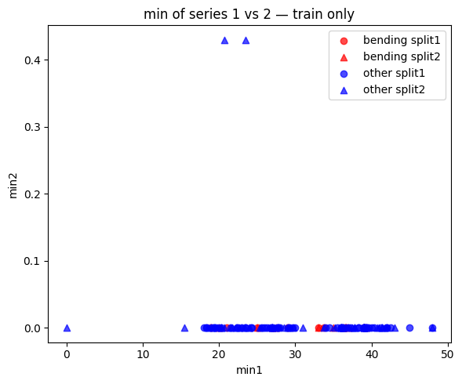
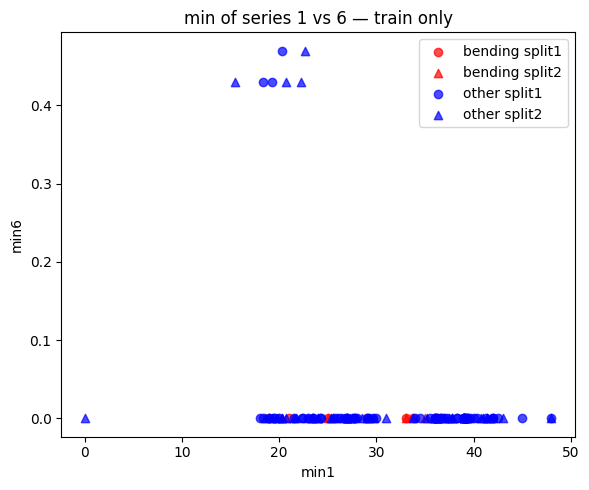
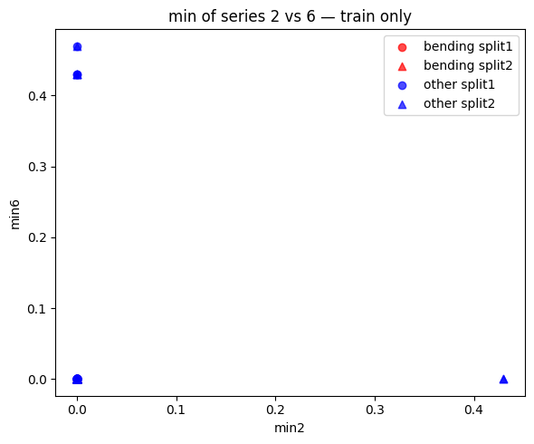
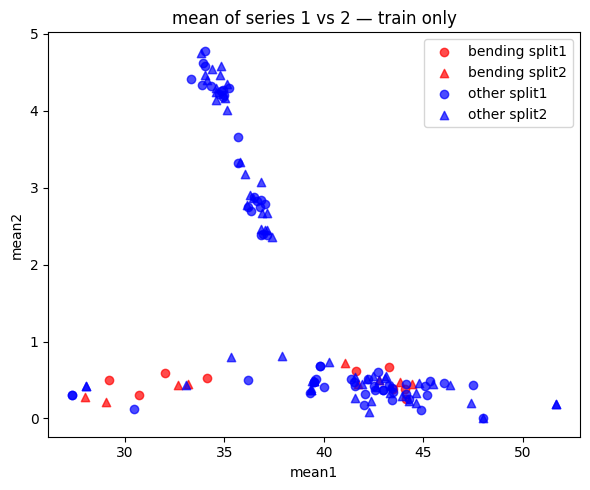
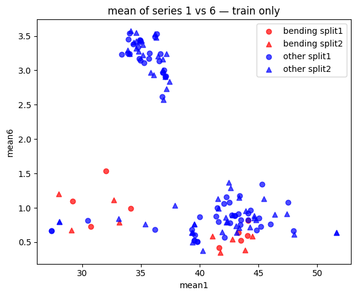
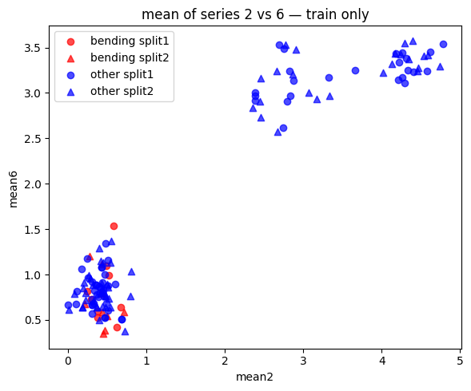
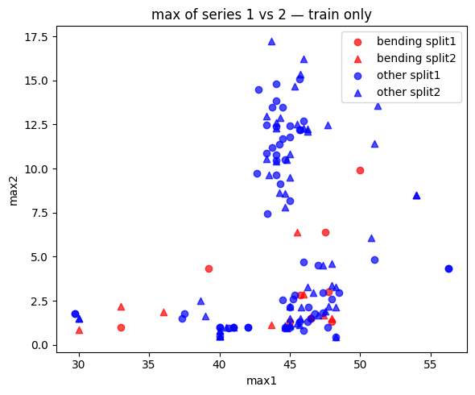
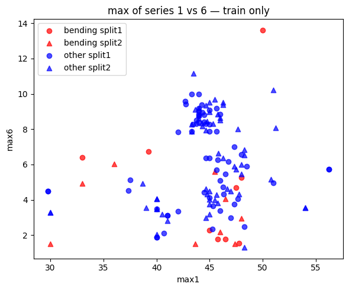
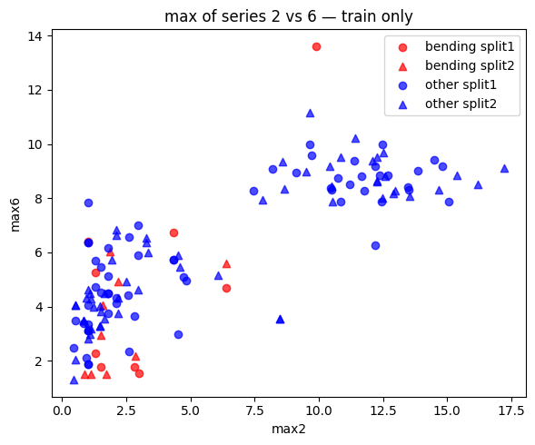
Time Series Segmentation Comparison: RFE versus Logistic Regression + L1
Binary Classification with RFE + P-value Model Approach
We break each time series in our training set into l ∈ {1, 2, . . . , 20} time series of approximately equal length and use logistic regression to solve the binary classification problem, using time-domain features.
we calculate the p-values for our logistic regression parameters in each model corresponding to each value of l and refit a logistic regression model using our pruned set of features.
Use 5-fold cross-validation to determine the best value of the pair (l, p), where p is the number of features used in recursive feature elimination.
Since we want to let our algorithm gain the knowledge of the various predictors available, the correct way would be to do the RFE along with Cross Validation.
feature dimension d(42) grows with ℓ as 42ℓ
1- SKLEARN Transformer Class
- ℓ: Number of splits for each time series instance
- dynamically build training dataframes of size (69, 42 * ℓ)
import numpy as np
import pandas as pd
from sklearn.base import BaseEstimator, TransformerMixin
class TimeSeriesFeaturizer(BaseEstimator, TransformerMixin):
def __init__(self, n_splits=1):
self.n_splits = n_splits
self._stat_funcs = [
np.nanmin,
np.nanmax,
np.nanmean,
np.nanmedian,
lambda x: np.nanstd(x, ddof=1),
lambda x: np.nanpercentile(x, 25),
lambda x: np.nanpercentile(x, 75),
]
def fit(self, X, y=None):
return self
def transform(self, X):
rows = []
for df in X:
df_copy = df.copy()
data = df_copy.iloc[:, 1:].to_numpy(dtype=float) # shape (T, n_series)
T, n_series = data.shape
inst_feats = []
#for each time series, compute the 7 features
for idx in range(n_series):
#select the column from corrspdongin to the time series data
time_series = data[:, idx]
#split the time series data into n_splits
splits = np.array_split(time_series, self.n_splits)
#in every split, #compute every feature (7) for this time series channel (out of 6)
for split in splits:
for fn in self._stat_funcs:
#we will have a list of 7 features * l_splits for each time series
inst_feats.append(fn(split))
#repeat to appen the next 7 features * l_splits for all time series (6)
#each row (sample) in the output will contain 7*6* l_splits features
rows.append(inst_feats)
return np.asarray(rows)raw_dfs_train = []
y = []
for key, df in dataframes.items():
raw_dfs_train.append(df)
y.append(1 if key.startswith('bending') else 0)
y = np.array(y, dtype=int)
print(f"Number of DataFrames in raw_dfs: {len(raw_dfs_train)}")
print("Columns in raw_dfs[0]:", list(raw_dfs_train[0].columns))import numpy as np
import sys
import pandas as pd
from sklearn.base import BaseEstimator, TransformerMixin
from sklearn.model_selection import StratifiedKFold, GridSearchCV
from sklearn.feature_selection import RFECV
from sklearn.linear_model import LogisticRegression
from sklearn.pipeline import Pipeline
pipe = Pipeline([
('featurize', TimeSeriesFeaturizer()),
('selector', RFECV(
estimator=LogisticRegression(solver='liblinear', C=sys.maxsize),
step=1,
cv=StratifiedKFold(5, shuffle=True, random_state=1),
scoring='roc_auc',
n_jobs=-1,
min_features_to_select=1
))
])
param_grid = {'featurize__n_splits': list(range(1,21))}
outer_cv = StratifiedKFold(n_splits=5, shuffle=True, random_state=0)
grid = GridSearchCV(pipe, param_grid=param_grid, cv=outer_cv, scoring='roc_auc',n_jobs=-1,refit=True)
grid.fit(raw_dfs_train, y)
print("Best ℓ:", grid.best_params_['featurize__n_splits'])
print("Best p:", grid.best_estimator_.named_steps['selector'].n_features_)
print("Outer‐CV ROC‐AUC:", grid.best_score_)Best ℓ: 2
Best p: 4
Outer‐CV ROC‐AUC: 1.0
final_model = grid.best_estimator_2 - RFE + p-value Classifier: AUC and ROC on Training Data
We report the confusion matrix and show the ROC and AUC for our classifier on train data. We report the parameters of our logistic regression βi ’s as well as the p-values associated with them.
from sklearn.metrics import confusion_matrix, roc_curve, roc_auc_score
y_pred_prob = final_model.predict_proba(raw_dfs_train)[:, 1]
y_pred = final_model.predict(raw_dfs_train)
cm = confusion_matrix(y, y_pred)
print("Confusion matrix (train):")
print(cm)
fpr, tpr, thresholds = roc_curve(y, y_pred_prob)
auc_score = roc_auc_score(y, y_pred_prob)
plt.figure(figsize=(6,5))
plt.plot(fpr, tpr, label=f"AUC = {auc_score:.3f}")
plt.plot([0,1], [0,1], '--', label="chance")
plt.xlabel("False Positive Rate")
plt.ylabel("True Positive Rate")
plt.title("ROC Curve (Train)")
plt.legend(loc="lower right")
plt.tight_layout()
plt.show()
Confusion matrix (train):
[[60 0]
[ 0 9]]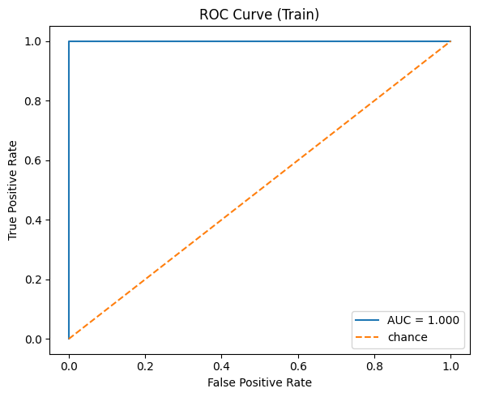
| Confusion Matrix (Train) | Predicted 0 | Predicted 1 |
|---|---|---|
| Actual 0 | 60 | 0 |
| Actual 1 | 0 | 9 |
import statsmodels.api as sm
X_full = final_model.named_steps['featurize'].transform(raw_dfs_train)
mask = final_model.named_steps['selector'].support_
X_sel = X_full[:, mask]
X_sm = sm.add_constant(X_sel)
logit_model = sm.Logit(y, X_sm)
result=logit_model.fit(maxiter = 10)
result.summary()Warning: Maximum number of iterations has been exceeded.
Current function value: 0.000022
Iterations: 10/Users/mishkin/Desktop/USC Classes/EE559_local/.venv/lib/python3.11/site-packages/statsmodels/base/model.py:607: ConvergenceWarning: Maximum Likelihood optimization failed to converge. Check mle_retvals
warnings.warn("Maximum Likelihood optimization failed to "| Dep. Variable: | y | No. Observations: | 69 |
| Model: | Logit | Df Residuals: | 43 |
| Method: | MLE | Df Model: | 25 |
| Date: | Tue, 15 Jul 2025 | Pseudo R-squ.: | 0.9999 |
| Time: | 09:47:11 | Log-Likelihood: | -0.0015323 |
| converged: | False | LL-Null: | -26.718 |
| Covariance Type: | nonrobust | LLR p-value: | 0.0007868 |
| coef | std err | z | P>|z| | [0.025 | 0.975] | |
| const | -5.2870 | 621.018 | -0.009 | 0.993 | -1222.459 | 1211.885 |
| x1 | 0.1499 | 29.832 | 0.005 | 0.996 | -58.319 | 58.619 |
| x2 | 1.6624 | 103.556 | 0.016 | 0.987 | -201.304 | 204.628 |
| x3 | -1.5198 | 77.650 | -0.020 | 0.984 | -153.710 | 150.671 |
| x4 | -1.4596 | 128.997 | -0.011 | 0.991 | -254.288 | 251.369 |
| x5 | -0.7231 | 123.478 | -0.006 | 0.995 | -242.735 | 241.289 |
| x6 | 1.5962 | 64.833 | 0.025 | 0.980 | -125.475 | 128.668 |
| x7 | -1.4437 | 30.268 | -0.048 | 0.962 | -60.768 | 57.880 |
| x8 | 0.7432 | 35.295 | 0.021 | 0.983 | -68.435 | 69.921 |
| x9 | 2.4598 | 104.890 | 0.023 | 0.981 | -203.121 | 208.041 |
| x10 | -0.3915 | 43.320 | -0.009 | 0.993 | -85.297 | 84.513 |
| x11 | 0.7134 | 86.018 | 0.008 | 0.993 | -167.878 | 169.305 |
| x12 | -0.7760 | 82.758 | -0.009 | 0.993 | -162.979 | 161.427 |
| x13 | 0.4047 | 26.193 | 0.015 | 0.988 | -50.932 | 51.742 |
| x14 | 0.2386 | 28.401 | 0.008 | 0.993 | -55.426 | 55.903 |
| x15 | 11.8560 | 330.609 | 0.036 | 0.971 | -636.125 | 659.838 |
| x16 | -1.8487 | 132.386 | -0.014 | 0.989 | -261.321 | 257.624 |
| x17 | -5.7389 | 167.384 | -0.034 | 0.973 | -333.806 | 322.328 |
| x18 | -3.4516 | 135.440 | -0.025 | 0.980 | -268.909 | 262.006 |
| x19 | -0.3535 | 14.827 | -0.024 | 0.981 | -29.413 | 28.706 |
| x20 | 1.8497 | 104.655 | 0.018 | 0.986 | -203.270 | 206.969 |
| x21 | -4.3567 | 88.373 | -0.049 | 0.961 | -177.564 | 168.851 |
| x22 | -1.4647 | 104.504 | -0.014 | 0.989 | -206.289 | 203.359 |
| x23 | 0.4390 | 35.094 | 0.013 | 0.990 | -68.345 | 69.223 |
| x24 | 1.2981 | 52.323 | 0.025 | 0.980 | -101.253 | 103.849 |
| x25 | -7.9668 | 158.703 | -0.050 | 0.960 | -319.019 | 303.086 |
Possibly complete quasi-separation: A fraction 0.94 of observations can be
perfectly predicted. This might indicate that there is complete
quasi-separation. In this case some parameters will not be identified.
3 - RFE + p-value Classifier on Test Set
Testing the classifier on the test set. We transform the test set into the same number of time series pur training set was broke into based on the rsults of RFE using ℓ = 4.
Classifier was tested using the features extracted from the test set.
Compared the accuracy on the test set with the cross-validation accuracy we obtained previously.
def iterate_testing_files():
colnames = ['time','avg_rss12','var_rss12','avg_rss13','var_rss13','avg_rss23','var_rss23']
test_dict = {}
for activity in os.listdir(test_dir):
activity_path = os.path.join(test_dir, activity)
if not os.path.isdir(activity_path):
continue
for fname in os.listdir(activity_path):
if not fname.lower().endswith('.csv'):
continue
file_path = os.path.join(activity_path, fname)
if file_path == bend4_special:
df = col4_bending2()
else:
df = pd.read_csv(file_path,comment='#',header=None, names=colnames, engine='python', on_bad_lines='skip')
key = f"{activity}_{fname.replace('.csv','')}"
test_dict[key] = df
return test_dict
test_dataframes = iterate_testing_files()
raw_dfs_test = []
y_test = []
for key, df in test_dataframes.items():
raw_dfs_test.append(df)
y_test.append(1 if key.startswith('bending') else 0)
y_test = np.array(y_test, dtype=int)
test_accuracy = final_model.score(raw_dfs_test, y_test)
print(f"Test set accuracy: {test_accuracy:.3f}")
from sklearn.metrics import confusion_matrix
y_pred_test = final_model.predict(raw_dfs_test)
cm_test = confusion_matrix(y_test, y_pred_test, labels=[0,1])
print("Confusion matrix (test):")
print(cm_test)
print(f"Mean outer‐CV accuracy was {np.mean(outer_scores):.3f}")
print(f"Test accuracy is {test_accuracy:.3f}")| Metric | Value |
|---|---|
| Test accuracy | 1.000 |
| Mean outer-CV accuracy | 0.971 |
| Confusion Matrix | Predicted 0 | Predicted 1 |
|---|---|---|
| Actual 0 | 15 | 0 |
| Actual 1 | 0 | 4 |
6 - Observations
Peformance:
- The test accuracy is very similar to the cross-validation accuracy.
Well-seperated classes?
- The classes are not not well separated; this is why we had to use the stratified split to deal with the class imbalance and reduce instability in the logistic regression parameter calculations.
7 - Imbalance + Case Control
There are 15 positive anf 4 negative samples in the test set. and 60 positive(bending), while only 9 negative in the training set.
we mst undersample the majority class (non-bending) down to the size of the minority (bending)
Given the above, we train a logistic regression model on a case-controlled training set to see whether we can get better results.
raw_dfs_train = []
y = []
for key, df in dataframes.items():
raw_dfs_train.append(df)
y.append(1 if key.startswith('bending') else 0)
y = np.array(y, dtype=int)
print(f"Number of DataFrames in raw_dfs: {len(raw_dfs_train)}")
print("Columns in raw_dfs[0]:", list(raw_dfs_train[0].columns))
raw_dfs_test = []
y_test = []
for key, df in test_dataframes.items():
raw_dfs_test.append(df)
y_test.append(1 if key.startswith('bending') else 0)
y_test = np.array(y_test, dtype=int)Number of DataFrames in raw_dfs: 69
Columns in raw_dfs[0]: ['time', 'avg_rss12', 'var_rss12', 'avg_rss13', 'var_rss13', 'avg_rss23', 'var_rss23']from sklearn.utils import resample
from sklearn.linear_model import LogisticRegression
from sklearn.metrics import confusion_matrix, roc_curve, roc_auc_score
import numpy as np
import matplotlib.pyplot as plt
featurizer = final_model.named_steps['featurize']
selector = final_model.named_steps['rfe']
X_train_full = featurizer.transform(raw_dfs_train)
mask = selector.support_
X_train_sel = X_train_full[:, mask]
X_test_full = featurizer.transform(raw_dfs_test)
X_test_sel = X_test_full[:, mask]
X_maj = X_train_sel[y==0]
y_maj = y[y==0]
X_min = X_train_sel[y==1]
y_min = y[y==1]
X_maj_down, y_maj_down = resample(X_maj, y_maj, replace=False,n_samples=len(y_min),random_state=42)
X_bal = np.vstack((X_maj_down, X_min))
y_bal = np.concatenate((y_maj_down, y_min))
clf = LogisticRegression(solver='liblinear')
clf.fit(X_bal, y_bal)
y_test_prob = clf.predict_proba(X_test_sel)[:,1]
y_test_pred = clf.predict(X_test_sel)
cm = confusion_matrix(y_test, y_test_pred, labels=[0,1])
print("Confusion matrix (test, case–control):")
print(cm)
fpr, tpr, _ = roc_curve(y_test, y_test_prob)
auc_score = roc_auc_score(y_test, y_test_prob)
plt.figure(figsize=(5,5))
plt.plot(fpr, tpr, label=f"AUC = {auc_score:.3f}")
plt.plot([0,1],[0,1],'--',label="chance")
plt.xlabel("False Positive Rate")
plt.ylabel("True Positive Rate")
plt.title("ROC Curve (Test, case–control)")
plt.legend(loc="lower right")
plt.tight_layout()
plt.show()Confusion matrix (test, case–control):
[[15 0]
[ 0 4]]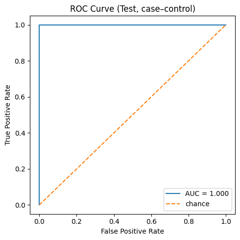
y_bal_pred = clf.predict(X_bal)
y_bal_prob = clf.predict_proba(X_bal)[:, 1]
cm_bal = confusion_matrix(y_bal, y_bal_pred, labels=[0,1])
print("Confusion matrix (balanced train):")
print(cm_bal)
fpr_bal, tpr_bal, _ = roc_curve(y_bal, y_bal_prob)
auc_bal = roc_auc_score(y_bal, y_bal_prob)
plt.figure(figsize=(5,5))
plt.plot(fpr_bal, tpr_bal, label=f"AUC = {auc_bal:.3f}")
plt.plot([0,1], [0,1], '--', label="chance")
plt.xlabel("False Positive Rate")
plt.ylabel("True Positive Rate")
plt.title("ROC Curve (Balanced Training Set)")
plt.legend(loc="lower right")
plt.tight_layout()
plt.show()Confusion matrix (balanced train):
[[9 0]
[0 9]]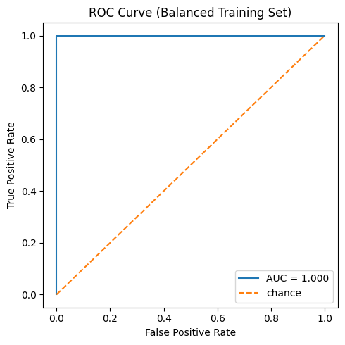
Binary Classification Using L1-penalized logistic regression
1 - Time Series Segmentation and L1 Binary Regression Model
import numpy as np
from sklearn.pipeline import Pipeline
from sklearn.model_selection import StratifiedKFold, GridSearchCV
from sklearn.linear_model import LogisticRegressionCV
from sklearn.metrics import accuracy_score
pipe_l1 = Pipeline([
('featurize', TimeSeriesFeaturizer()),
('logreg', LogisticRegressionCV(penalty='l1', solver='liblinear', cv=5,scoring='accuracy', n_jobs=-1, max_iter=50))
])
param_grid = {'featurize__n_splits': list(range(1, 21)),}
outer_cv = StratifiedKFold(n_splits=5, shuffle=True, random_state=0)
grid_l1 = GridSearchCV(
pipe_l1,
param_grid=param_grid,
cv=outer_cv,
scoring='accuracy',
n_jobs=-1,
refit=True
)
grid_l1.fit(raw_dfs_train, y)
best_l = grid_l1.best_params_['featurize__n_splits']
best_C = grid_l1.best_estimator_.named_steps['logreg'].C_[0]
print(f"Best number of splits ℓ: {best_l}")
print(f"Best inverse‐penalty C: {best_C:.2e}")
print(f"Outer‐CV accuracy: {grid_l1.best_score_:.3f}")
X_test_feats = grid_l1.best_estimator_.named_steps['featurize'].transform(raw_dfs_test)
mask = grid_l1.best_estimator_.named_steps['logreg'].coef_.ravel() != 0
X_test_sel = X_test_feats[:, mask]
# Predict & report accuracy
y_pred_test = grid_l1.best_estimator_.named_steps['logreg'].predict(X_test_feats)
test_acc = accuracy_score(y_test, y_pred_test)
print(f"Test accuracy (L1 model): {test_acc:.3f}")Best number of splits ℓ: 1
Best inverse‐penalty C: 3.59e-01
Outer‐CV accuracy: 0.986
Test accuracy (L1 model): 1.000
Overall Comparison of Binary Classifiers
P-value + RFE often achieves perfect separation on the training set as notes with the AUC being close to 1 but tends to overfit to the trainign data in thise case. The likelihood function becomes unbounded due to perfect separation, and the p-values are shown as 1 – counterintuitive to model coeff being statistically significant.
L1 was way easier to implement because it handles the feature seelction automatically and most libraris has build in support for l1-regression. The p values are harder to calclate and require R.
Multiclass Classifier
we build an L1- penalized multinomial regression model to classify all activities.
1 - Time Series Segmentation + Multinomial Regression Model
from sklearn.preprocessing import LabelEncoder
raw_dfs_train, y_train = [], []
for key, df in dataframes.items():
raw_dfs_train.append(df)
activity = key.split('_dataset')[0]
y_train.append(activity)
raw_dfs_test, y_test = [], []
for key, df in test_dataframes.items():
raw_dfs_test.append(df)
activity = key.split('_dataset')[0]
y_test.append(activity)
le = LabelEncoder().fit(y_train)
y_train_enc = le.transform(y_train)
y_test_enc = le.transform(y_test)
classes = le.classes_
n_classes = len(classes)pipe_multi = Pipeline([
('featurize', TimeSeriesFeaturizer()),
('logreg', LogisticRegressionCV(solver='saga', multi_class='multinomial', cv=5,scoring='accuracy',n_jobs=-1, max_iter = 2000))
])
outer_cv = StratifiedKFold(n_splits=5, shuffle=True, random_state=0)
param_grid = {'featurize__n_splits': list(range(1,21))}
grid_multi = GridSearchCV(
pipe_multi,
param_grid=param_grid,
cv=outer_cv,
scoring='accuracy',
n_jobs=-1,
refit=True,
)
grid_multi.fit(raw_dfs_train, y_train_enc)
best_l = grid_multi.best_params_['featurize__n_splits']
best_C = grid_multi.best_estimator_.named_steps['logreg'].C_[0]
cv_accuracy = grid_multi.best_score_
print(f"Best ℓ = {best_l}, best C = {best_C:.2e}, outer‐CV acc = {cv_accuracy:.3f}")Best ℓ = 1,
Best C = 2.78e+00,
Outer‐CV acc = 0.798
2 - ROC and Confustion Matrix
from sklearn.metrics import confusion_matrix, ConfusionMatrixDisplay
test_acc = grid_multi.score(raw_dfs_test, y_test_enc)
print(f"Test‐set accuracy (multiclass): {test_acc:.3f}")
y_pred_test = grid_multi.predict(raw_dfs_test)
cm = confusion_matrix(y_test_enc, y_pred_test, labels=range(n_classes))
disp = ConfusionMatrixDisplay(cm, display_labels=classes)
disp.plot(cmap="Blues", xticks_rotation="vertical")Test‐set accuracy (multiclass): 0.789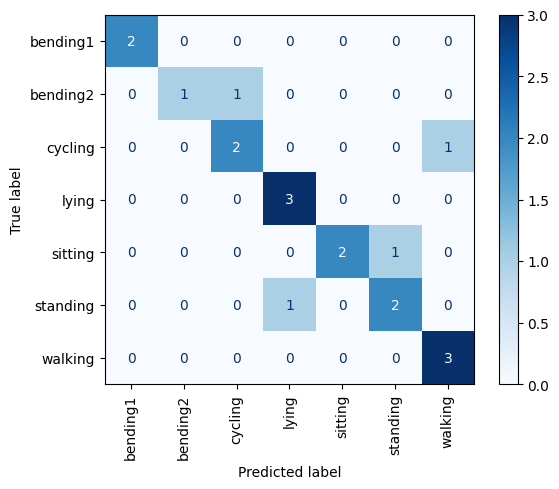
from sklearn.metrics import roc_curve, roc_auc_score
from sklearn.preprocessing import label_binarize
y_test_bin = label_binarize(y_test_enc, classes=range(n_classes))
y_score = grid_multi.predict_proba(raw_dfs_test)
import matplotlib.pyplot as plt
fpr, tpr, roc_auc = {}, {}, {}
for i in range(n_classes):
fpr[i], tpr[i], _ = roc_curve(y_test_bin[:, i], y_score[:, i])
roc_auc[i] = roc_auc_score(y_test_bin[:, i], y_score[:, i])
plt.figure(figsize=(6,6))
for i, cls in enumerate(classes):
plt.plot(fpr[i], tpr[i], label=f"{cls} (AUC={roc_auc[i]:.2f})")
plt.plot([0,1],[0,1],'k--',label="chance")
plt.xlabel("False Positive Rate")
plt.ylabel("True Positive Rate")
plt.title("Multiclass OVR ROC Curves")
plt.legend(loc="lower right", fontsize="small")
plt.tight_layout()
plt.show()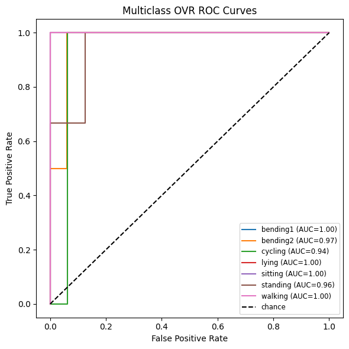
Gaussian Naive Bayes versus Multinomial Naive Bayes
1 - Time Series Segmentation and Model
from sklearn.pipeline import Pipeline
from sklearn.naive_bayes import GaussianNB, MultinomialNB
from sklearn.model_selection import GridSearchCV, StratifiedKFold
from sklearn.metrics import ConfusionMatrixDisplay
pipe_gnb = Pipeline([
('featurize', TimeSeriesFeaturizer()),
('gnb', GaussianNB())
])
pipe_mnb = Pipeline([
('featurize', TimeSeriesFeaturizer()),
('mnb', MultinomialNB())
])
param_grid = {'featurize__n_splits': list(range(1,21))}
cv = StratifiedKFold(n_splits=5, shuffle=True, random_state=0)
grid_gnb = GridSearchCV(pipe_gnb, param_grid, cv=cv, scoring='accuracy', n_jobs=-1)
grid_mnb = GridSearchCV(pipe_mnb, param_grid, cv=cv, scoring='accuracy', n_jobs=-1)
grid_gnb.fit(raw_dfs_train, y)
grid_mnb.fit(raw_dfs_train, y)
best_l_gnb = grid_gnb.best_params_['featurize__n_splits']
cv_acc_gnb = grid_gnb.best_score_
best_l_mnb = grid_mnb.best_params_['featurize__n_splits']
cv_acc_mnb = grid_mnb.best_score_
print(f"GNB: best ℓ = {best_l_gnb}, CV acc = {cv_acc_gnb:.3f}")
print(f"MNB: best ℓ = {best_l_mnb}, CV acc = {cv_acc_mnb:.3f}")
best_gnb = grid_gnb.best_estimator_
best_mnb = grid_mnb.best_estimator_
test_acc_gnb = best_gnb.score(raw_dfs_test, y_test)
test_acc_mnb = best_mnb.score(raw_dfs_test, y_test)
print(f"GNB test accuracy = {test_acc_gnb:.3f}")
print(f"MNB test accuracy = {test_acc_mnb:.3f}")
for name, clf in [('GaussianNB', best_gnb), ('MultinomialNB', best_mnb)]:
y_pred = clf.predict(raw_dfs_test)
cm = confusion_matrix(y_test, y_pred, labels=[0,1])
disp = ConfusionMatrixDisplay(cm, display_labels=['other','bending'])
disp.plot(cmap='Blues')
plt.title(f"{name} (ℓ={clf.named_steps['featurize'].n_splits}) CM")
plt.show()GNB: best ℓ = 18, CV acc = 0.841
MNB: best ℓ = 1, CV acc = 0.927
GNB test accuracy = 0.684
MNB test accuracy = 1.000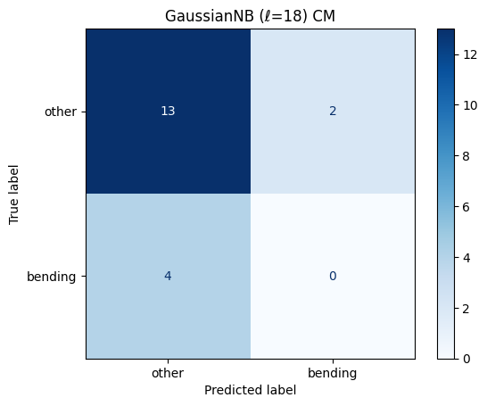
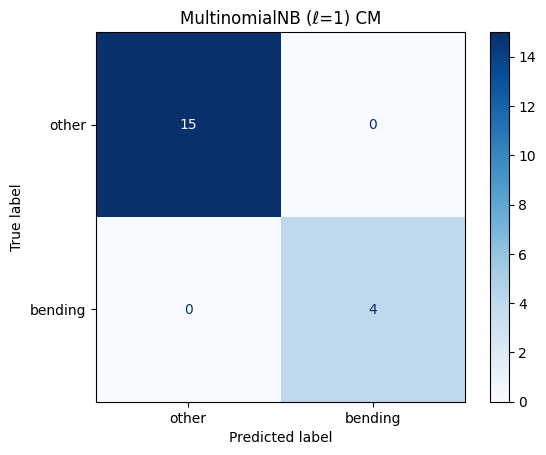
Gaussian Naive Bayes with PCA Reduction
- using the previosuly computed best_ℓ for the Naive Bayes Gaussian classifier, we select the best number of features (p-value) using PCA components via cross-validation
- Gaussian Bayes assumes independent features, and PCA can help reduce correlation between features
raw_dfs_train = []
y = []
for key, df in dataframes.items():
raw_dfs_train.append(df)
y.append(1 if key.startswith('bending') else 0)
y = np.array(y, dtype=int)
print(f"Number of DataFrames in raw_dfs: {len(raw_dfs_train)}")
print("Columns in raw_dfs[0]:", list(raw_dfs_train[0].columns))
raw_dfs_test = []
y_test = []
for key, df in test_dataframes.items():
raw_dfs_test.append(df)
y_test.append(1 if key.startswith('bending') else 0)
y_test = np.array(y_test, dtype=int)Number of DataFrames in raw_dfs: 69
Columns in raw_dfs[0]: ['time', 'avg_rss12', 'var_rss12', 'avg_rss13', 'var_rss13', 'avg_rss23', 'var_rss23']from sklearn.decomposition import PCA
pipe = Pipeline([
('featurize', TimeSeriesFeaturizer(n_splits=best_l)),
('pca', PCA()),
('nb', GaussianNB())
])
max_p = min(len(raw_dfs_train), 42 * best_l)
param_grid = {'pca__n_components': list(range(2, max_p+1, 2))}
cv = StratifiedKFold(n_splits=5, shuffle=True, random_state=0)
grid = GridSearchCV(pipe, param_grid, cv=cv, scoring='accuracy', n_jobs=-1, refit=True)
grid.fit(raw_dfs_train, y_train_enc)
best_p = grid.best_params_['pca__n_components']
cv_acc_pca = grid.best_score_
print(f"Best ℓ = {best_l}, Best # PCs = {best_p}, CV accuracy = {cv_acc_pca:.3f}")
test_acc_pca = grid.score(raw_dfs_test, y_test_enc)
print(f"Test‐set accuracy (PCA + NB): {test_acc_pca:.3f}")
X_train_feats = grid.best_estimator_.named_steps['featurize'].transform(raw_dfs_train)
pca = grid.best_estimator_.named_steps['pca']
X2 = pca.transform(X_train_feats)[:, :2]
plt.figure(figsize=(6,5))
for cls in range(len(classes)):
mask = (y_train_enc == cls)
plt.scatter(X2[mask,0], X2[mask,1], alpha=0.7, label=classes[cls])
plt.xlabel("PC1"); plt.ylabel("PC2")
plt.title(f"PCA scatter (ℓ={best_l}, p={best_p})")
plt.legend(loc="best", fontsize="small")
plt.tight_layout()
plt.show()
y_pred_test = grid.predict(raw_dfs_test)
cm = confusion_matrix(y_test_enc, y_pred_test, labels=range(len(classes)))
disp = ConfusionMatrixDisplay(cm, display_labels=classes)
disp.plot(cmap="Blues", xticks_rotation="vertical")
plt.title("Confusion Matrix (PCA + NB)")
plt.tight_layout()
plt.show()Best ℓ = 1
Best # PCs = 8
CV accuracy = 0.868
Test‐set accuracy (PCA + NB): 0.842
from sklearn.preprocessing import label_binarize
from sklearn.metrics import roc_curve, roc_auc_score
import numpy as np
y_test_bin = label_binarize(y_test_enc, classes=np.arange(len(classes)))
y_score = grid.predict_proba(raw_dfs_test)
plt.figure(figsize=(6,6))
for i, cls in enumerate(classes):
fpr, tpr, _ = roc_curve(y_test_bin[:, i], y_score[:, i])
auc = roc_auc_score(y_test_bin[:, i], y_score[:, i])
plt.plot(fpr, tpr, label=f"{cls} (AUC={auc:.2f})")
fpr_micro, tpr_micro, _ = roc_curve(y_test_bin.ravel(), y_score.ravel())
auc_micro = roc_auc_score(y_test_bin, y_score, average="micro")
plt.plot(fpr_micro, tpr_micro, '--', color='gray', label=f"micro-avg (AUC={auc_micro:.2f})")
plt.plot([0,1], [0,1], 'k--', label="chance")
plt.xlabel("False Positive Rate")
plt.ylabel("True Positive Rate")
plt.title(f"One-vs-Rest ROC (ℓ={best_l}, p={best_p})")
plt.legend(loc="lower right", fontsize="small")
plt.tight_layout()
plt.show()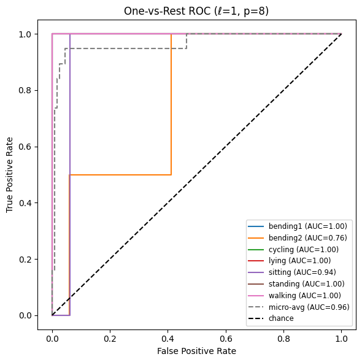
Summary of Multiclass Classification Models
The Multinomial Naive Bayes Classifier is better for multi-class classification since its AUC per class is better than boththe Gaussian Naive Bayes as well as logistic regression with L1 regularization